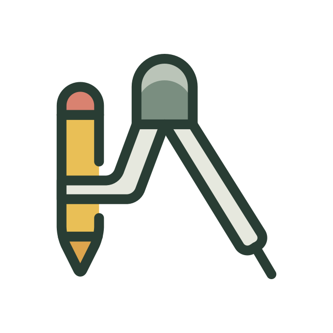
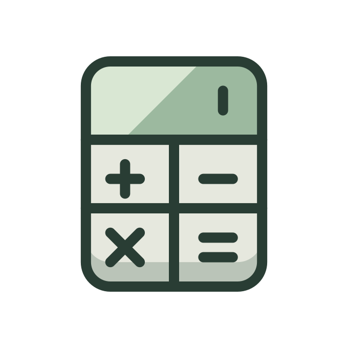
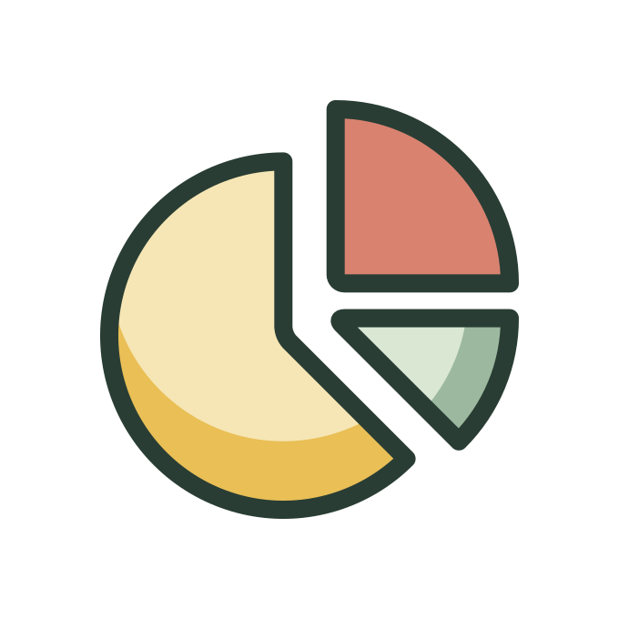
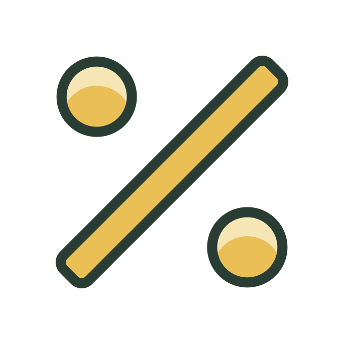
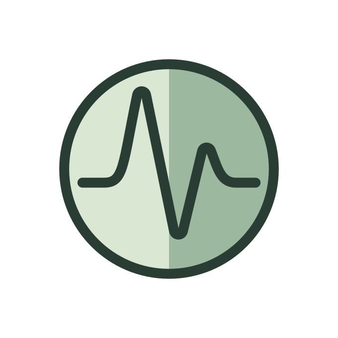
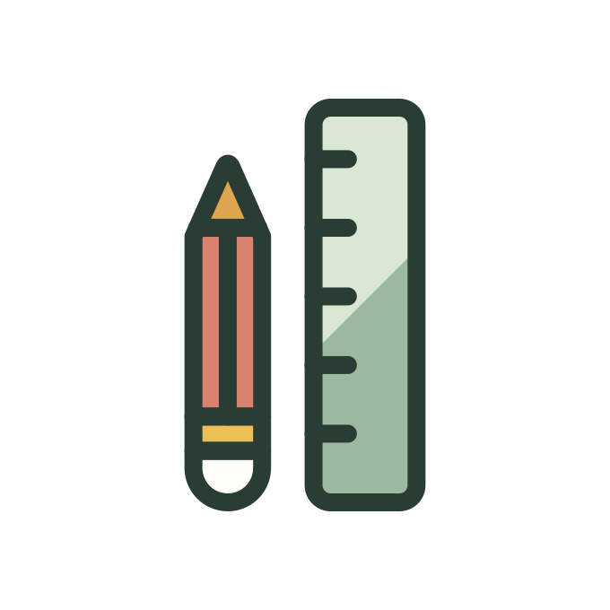

У каждого раздела — свой знак.
Одна коллекция. Общая палитра. Постоянные изображения в обеих версиях.

Геометрия

Числа и вычисления

Дроби

Отношения и проценты
Функции и графики

Вероятность и статистика
Учёба
